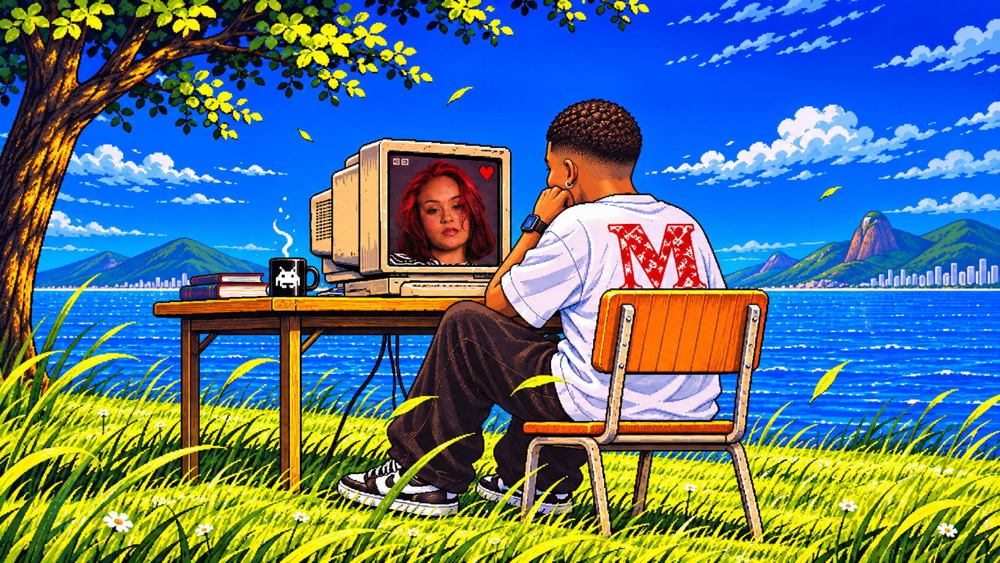
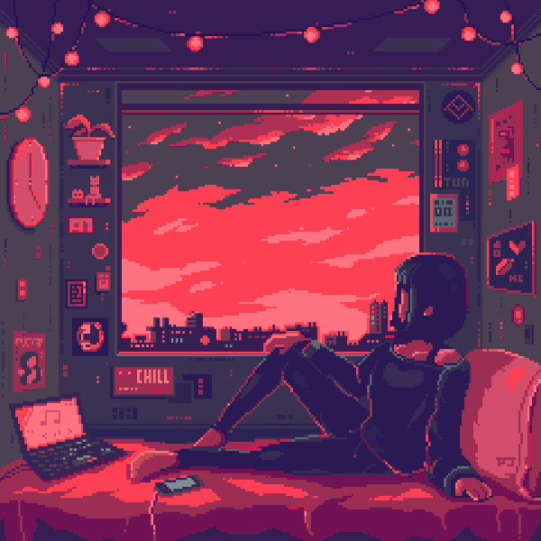

Primeiramente, quero agradecer por você ainda continuar aqui comigo. E também quero agradecer por aceitar ser a minha companheira pelo resto da minha vida. Vc não tem noção o quão importante é pra mim. Eu só encontro paz com você, eu penso mais em vc e em como vamos estar daqui há 3 ou 4 anos, não sei se estaremos juntos até lá mas enquanto estivermos juntos hoje. O amanhã não vai me incomodar.
Vc sabe que um dos meus maiores medos é perder você, é não ter mais você na minha vida como antes. Eu não quero que isso aconteça nunca, nem que eu tenha que pedir pra Deus guardar o nosso relacionamento. Passamos por muitas coisas e inclusive estresse, brigavamos direto parecia até que a gente se odiava, mas na realidade era o contrário, a gente sempre brigou e nunca saiu de perto um do outro.
Mas eu quero fazer diferente, eu quero te fazer a garota mais especial e importante pra mim, quero que vc se sinta a mais privilegiada do mundo. Não por ter tudo do bom e do melhor mas sim ter um bom homem do seu lado. Isso sim é tudo. Meu futuro está atrelado no seu.
Eu sonho e penso todos os dias quando que vamos finalmente dormir juntos e acordar juntos todos os dias sem precisar mandar mensagem dizendo que tá com saudades e que não aguenta mais viver sem a minha presença. Eu não quero isso pra gente. Quero construir meu futuro com vc. Quero vc perto de mim quando eu ganhar.
Eu escrevi essa carta pra vc pq é o único lugar onde eu consigo me expressar bem de certa forma, e quero que vc entenda essa linguagem de amor que tenho pra demonstrar pra vc o tamanho do meu amor por você. Vc tem vários detalhes, qualidades e defeitos, mas tá tudo bem. Eu amo tudo em você. Nada me afeta ou me atrapalha, gosto de você do jeito que é. Você é forte, corajosa e um pingo de confiança em si.
Eu me inspiro em vc, da forma como age e pensa. Se não fosse por vc nem na faculdade eu entrava, ficava com um pensamento tão pequeno em relação a algumas coisas, por isso estou aqui pra te mostrar o quão feliz e grato que sou por ti, você mudou totalmente a maneira que eu enxergo as coisas, eu sempre vou aprender coisas novas com você, pq vc me deixa empolgado pra fazer as coisas e levanta minha autoestima. E eu espero que eu esteja levantando a sua.
Nunca vou te deixar sozinha, desamparada ou preocupada, pq eu vou sempre estar com vc mesmo de longe e perto e não me refiro a presença fica e sim espiritual e mental. Por isso saiba que vc tem a mim, que sempre vai estar aqui contando com vc. Eu te amo e agradeço por ler até o final. ♥️
Feliz aniversário de 2 anos e 1 mês adiantado 🤍
DE MIM PARA O AMOR DA MINHA VIDA ❤️